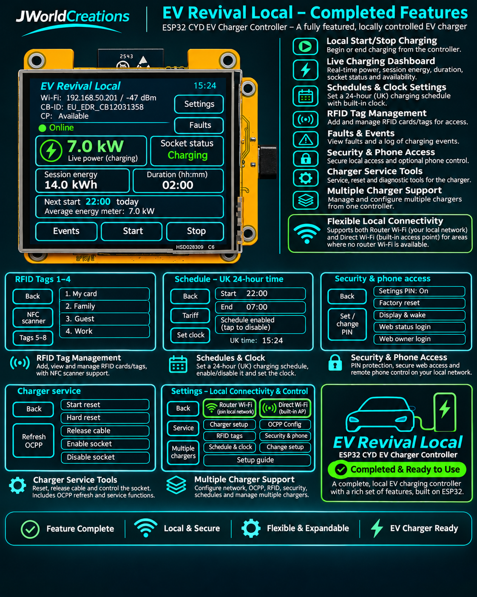

Local charging · By JWorldCreations
Your charger.
Your local controls.
Manage charging, schedules and RFID from your own touchscreen, with local access from your phone.
Set up your touchscreen
Install EV Revival Local
Connect your CYD to a computer with a USB data cable. Use Chrome or Edge, then follow the installation prompts.
Use desktop Chrome or Edge to install over USB.
Open the HTTPS version of this page to install.
Confirm the two statements to get started.
Need help?Features & Capabilities


Need help?
Is my board compatible?
Use the ESP32-2432S028 / ESP32-32E board with 4 MB memory, ILI9341_2 display and XPT2046 touch. Similar-looking boards may not work. The installer checks the chip and memory automatically; you must confirm the display and touch. Your charger needs OCPP 1.6 JSON and a configurable connection address.
What happens to my settings?
This is a fresh install, not a settings-preserving update. Save any available session export and record your settings first. Settings may be overwritten even if you leave “Erase device” unticked. Selecting that option deletes all device data and requires confirmation.
Recover or reinstall
- Check your board matches the supported model. Close other programs using its USB connection.
- Hold BOOT, press and release RESET, then connect using the installation button above. Release BOOT when connected.
- Confirm compatibility and possible data loss, then reinstall using the same Install EV Revival Local button. The same approved software is checked again; there is no unverified fallback.
- Use full erase only as a last resort for incompatible saved settings. It cannot fix incompatible hardware and deletes all saved data.
- When installation finishes, disconnect in the browser, unplug/replug USB, and follow the touchscreen setup guide. Check charger operation before relying on it.
Only the current approved version is available. Recovery after an interrupted installation is not automatic or guaranteed.
Connection, download or display problems
No USB device: use a data cable, try another port and close other programs using the board. Your board may need its manufacturer's USB driver.
Download or verification failed: no erase or write starts when these checks fail. Check your internet connection and retry; do not bypass verification.
Blank screen or interrupted installation: check the exact board and display, then try the BOOT/RESET recovery steps. Do not try random software. If it still cannot connect, seek hardware assistance.
After installation
Follow Setup guide on the touchscreen. Router Wi-Fi uses your existing 2.4 GHz network; Direct Wi-Fi uses the controller’s own network. For phone controls, open Settings → Security & phone access → Web owner login on the CYD and follow its instructions.
Software verification details
Verified software means its size and SHA-256 match the approved release. It does not certify your physical display or touchscreen.
SHA-256